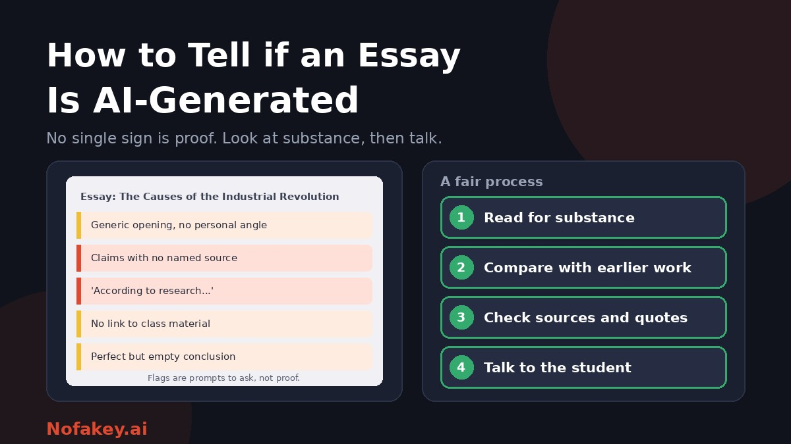

The essay is polished, well organised and oddly empty. It says all the right things and nothing in particular. Is it AI-generated? Teachers, tutors and editors ask this question more often now, and the honest answer is that you usually cannot tell from the text alone. What you can do is notice signs worth following up, avoid unreliable shortcuts, and use a fair process that gives the writer a chance to explain. This guide shows how.
The honest starting point
Polished writing is not evidence of AI. Good students, tutors' help, editing tools and language learners can all produce clean prose. And AI writing can be edited, paraphrased or prompted to sound different. So the aim is not to "catch" a style, it is to find out whether the work reflects the student's own thinking. Substance and process tell you more than surface.
Signs worth noticing
None of these proves anything alone. Several together, plus a mismatch with what you know of the writer, justify a closer look.
| Sign | What it looks like | Why it can mislead |
|---|---|---|
| Polished but vague | Smooth sentences that make broad claims with little concrete detail or argument | Some students write generally when unsure |
| No link to the course | No reference to class discussion, set readings, lectures or your instructions | The assignment may not ask for them |
| Missing or invented sources | Vague attributions such as "studies show," or references that do not exist or do not say what is claimed | Careless citing happens in human work too, though fabricated sources are a stronger signal |
| Quotations that do not check out | Quotes that cannot be found in the text or are misattributed | Students sometimes quote from memory or notes |
| Formulaic structure | Neat introduction, three balanced points, tidy conclusion, repeated transitions | Many schools teach exactly this template |
| Repetition and padding | The same point restated in different words, generic concluding lines | Word-count pressure causes it |
| Sudden change in voice or level | Far more fluent, formal or sophisticated than the student's earlier work | Students improve, get help or take more care on some assignments |
| Factual errors stated confidently | Wrong dates, names or events, delivered smoothly | Humans also make errors |
| Cannot discuss it | The student struggles to explain arguments, terms or sources in their own essay | Nerves can cause this, so keep the conversation fair |
| Process oddities | The document appears fully formed in one paste, with no earlier drafts | Students write in other tools and paste in |
"Tells" that do not hold up
- Favourite words and phrases. Some words appear often in AI text, but people use them too, and AI can be told to avoid them.
- Punctuation habits, such as em dashes. Skilled human writers use them heavily, and a tool can be told not to.
- Perfect grammar. Many careful writers, and writers using grammar tools, produce clean text.
- A tidy five-paragraph shape. It is a classroom classic.
- "It just sounds like AI." Gut feeling is easily biased, especially against writers from other language backgrounds.
Treat these as weak hints at most, never as grounds for an accusation.
Do not ask a chatbot, and do not rely on one detector
- Chatbots are not detectors. Asking an AI whether it wrote an essay can produce confident, wrong answers. In one widely reported case, a teacher who did this wrongly marked a whole class as having cheated.
- Detector scores are clues, not proof. They can be wrong in both directions, especially for short, edited, formal or non-native writing. See are AI detectors accurate? and AI detector false positives for non-native English writers.
- If you do use a tool, use it only to decide where to look, and never as the basis for a penalty.
A fair review process
- Read for substance. Does the essay make a specific, supported argument? Does it use what was taught?
- Compare with earlier work. Look at previous essays, in-class writing and emails for voice, level and typical errors. A change calls for a question, not a conclusion.
- Check sources and quotations. Look up several references and quotes. Do they exist, and do they say what the essay claims?
- Look at the process. If you can, ask for version history, drafts, notes and outlines.
- Talk to the student. Use open, neutral questions, as below.
- Consider a short follow-up task, such as explaining a paragraph aloud or writing a few sentences on the topic in class.
- Decide on evidence. Use the combined picture, not one sign, and follow your school's policy.
- Document your reasoning and give the student a chance to respond, with a clear appeal route. See AI detector policy for universities.
Questions to ask the student
Keep the tone curious, not accusing.
- "Can you walk me through how you wrote this? Where did you start?"
- "What was the hardest part, and what did you change along the way?"
- "Can I see an earlier draft, your notes or the document's version history?"
- "Tell me, in your own words, the main argument of your second paragraph."
- "Where did you find this source, and what does it say?"
- "Did you use any tools to help, such as grammar checkers, translators or AI?"
- "If you wrote this again from scratch, what would you do differently?"
A student who used AI as a helper but owns the ideas can usually answer. A student who cannot discuss the work may need support, or may not have written it. Either way, you learn more than a score would tell you.
Fairness: protect honest students
- Non-native English writers are at higher risk of false suspicion, because careful, plain writing can look "machine-like." Use extra care and compare with their own earlier work.
- Accessibility and writing support. Some students rely on assistive tools, tutors or editing services allowed by your policy.
- Be consistent. Apply the same process to every student, whatever your hunch.
- Keep concerns confidential, and avoid public accusations.
- Remember the risk of being wrong. A false accusation can harm a student far more than a missed case harms the course.
Design assignments that are harder to outsource
- Say what is allowed. State your AI policy in each brief, including whether disclosure is required.
- Assess the process, with outlines, annotated sources, drafts and short reflections.
- Use some in-class writing to see a student's unaided voice.
- Tie tasks to the course, such as specific readings, class discussions, local examples or student experience.
- Add a short oral follow-up for major assignments.
- Use AI-integrated tasks, where students critique or improve a chatbot's answer and show their checks. See how to teach students to spot AI content.
- Teach citation and verification, since invented sources are one of the clearest problems with unchecked AI text.
Other kinds of writing
The same principles apply beyond school essays. For job documents, see how to detect AI-generated cover letters. For academic papers, see AI-generated research paper detection. For editors and publishers, see AI detectors for publishers and editors.
If you are a student reading this
Keep drafts, notes and version history, follow your school's AI rules, disclose permitted use and be ready to explain your work. If you are flagged unfairly, our guide to a ChatGPT text detector for students explains what to do. Wording ideas for disclosure are in how to label AI-generated content. If a message, link or offer connected to your work looks suspicious, paste it into our free checker for a quick first read. It is not an essay detector.
Conclusion
You cannot tell for certain whether an essay is AI-generated just by reading it. What you can do is read for substance, compare with earlier work, check sources and quotes, look at the process, and have a respectful conversation. Avoid folk tells, chatbot opinions and score-only decisions, protect honest and non-native writers, and design assignments that make learning visible. Find more guides on the Nofakey.ai blog.
Frequently asked questions
Can you reliably tell if an essay is AI-generated?
Not from the text alone. Some signs, such as vague claims, missing or invented sources and a mismatch with the student’s earlier work, can raise questions, but none is proof. Verify through the student’s process and a conversation.
Can I ask a chatbot whether it wrote an essay?
No. Chatbots are not designed to reliably identify AI-written text and can give confident but wrong answers about who wrote something.
Are words like delve or punctuation like em dashes proof of AI?
No. Such patterns are often noticed in AI text, but people use them too, and AI can be told to avoid them. Treat them as weak hints at most.
What should I do if I suspect a student used AI?
Read for substance, compare with earlier work, check sources and quotes, look at drafts or version history, and talk to the student with open questions. Follow your school’s policy and give the student a chance to respond.
How can I design assignments that are harder to outsource to AI?
Use drafts and reflections, in-class writing, references to class discussion or local material, oral follow-ups, and tasks where students critique or improve AI output, and state clearly what AI use is allowed.
Got a suspicious link, offer or message to check?
Run it through the checker